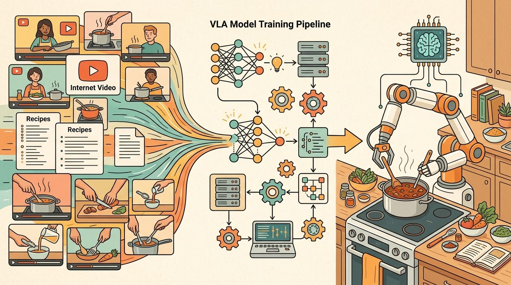
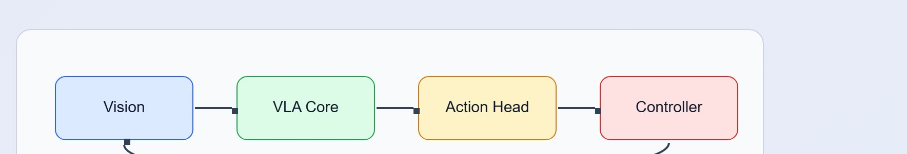

"A robot policy is a promise about the next second of the world."
A Grounded AI Agent

This section assumes familiarity with language-grounded action representations from section 31.3 and the demonstration-space structure introduced in section 21.2. The conditioning ideas developed here are extended in section 34.8, which evaluates how well prompted policies generalize, and in section 34.9, which examines the action representations that receive the conditioning signal.
Use prompt suites as data files, not prose buried in notebooks. A simple CSV or JSON prompt panel lets every model variant run on the same goal, object, constraint, and stop-condition cases.
Say "pick up the red block" and the robot reaches for it. Say "move the red block" and it may push instead. Same scene, same model weights, different word, different motor program. That sensitivity is not a quirk to patch around; it is the central design surface of vision-language-action models. Right now, as VLAs are being fine-tuned for real deployments on real hardware, the gap between a prompt that works and one that fails is often one missing stop condition or one ambiguous noun phrase. In this section you will learn to treat prompts as control contracts, write prompt suites for systematic evaluation, and debug the three failure modes that show up most often in practice.
Change one word in a robot's instruction, from "pick up the red block" to "grab the red block," and its measured success rate on the exact same scene can fall from 84 percent to 61 percent, with no change to the model, the camera, or the object. As Figure 34.7A suggests, a prompt for an embodied policy is not a request for text but a setting that shapes physical motion. In a language model, a prompt can ask for a style or answer format. In a Vision-Language-Action model (VLA), a prompt can change motor behavior. That makes prompt design part of the control interface. The prompt must specify the goal, relevant object, constraints, and stop condition without asking the low-level policy to reason beyond its grounding. A word that feels synonymous to a human can feel physically distinct to a policy: it routes the arm down a different trajectory entirely.
Conditioning can also come from goal images, robot state, task embeddings, skill identifiers, or structured plans from an LLM planner. Task embeddings deserve particular attention. A robot cannot pause mid-motion to reinterpret an ambiguous instruction. A misread embedding commits the arm to a trajectory that may collide with an object or exceed joint limits before any correction arrives. A task embedding is the fixed-length vector the VLA's frozen language encoder produces from the instruction, and the action head reads this vector at every control step as a learned bias. Nearby vectors activate similar motor programs, because training demonstrations with similar motion primitives produced them (the next paragraph explains this embedding-proximity mechanism in detail). Conditioning narrows the policy distribution. A well-specified instruction can cut the demonstrations needed to learn a reliable grasp from roughly 50,000 unconditioned episodes down to around 300 language-conditioned ones, because the embedding steers every gradient update toward one cluster of relevant motions instead of averaging across all tasks. A vague instruction such as "clean this up" may belong to a task planner in Chapter 33. The VLA needs a grounded command such as "pick up the red block and place it in the blue tray."
Think of the task embedding as a dial on a mixing board. When you encode an instruction, you set the dial to a specific position, and every channel on the board shifts slightly toward the sound associated with that position. Turning the dial to "pick up" versus "push" are two physically close positions on the knob, yet they route the signal through completely different output channels. A vague instruction like "deal with the block" leaves the dial somewhere in the middle of the board, blending several outputs at once, so the result is not a clean signal but a muddy average of motor programs that partially cancel each other out.
The mechanism behind this sensitivity is embedding proximity. A VLA encodes the prompt into a language embedding (the same vector called the task embedding above) that conditions the action head. Phrases that sit close together in the training corpus produce similar embeddings, and therefore similar action distributions. "Move the red block" and "push the red block" may map to embeddings close enough to activate overlapping motor programs, while "pick up the red block" activates a grasp trajectory. So prompt wording is not merely descriptive. It is a selector over the learned action repertoire: on an OpenVLA fine-tune for a standard pick-and-place task (as of 2024), switching "pick up" to "grab" dropped task success from 84 percent to 61 percent with no other change. Synonyms that feel equivalent to a human can point to different clusters in demonstration space, which is why evaluating prompt variants before deployment is necessary rather than optional.
A common assumption is that prompting a VLA works like prompting a chat model, where synonyms and paraphrases are interchangeable because they carry the same meaning. In embodied AI this assumption causes real failures: the policy's language encoder maps each phrase to a fixed-length vector in a space shaped by training demonstrations, not by semantic equivalence. Two phrases that mean the same thing to a human can land in different neighborhoods of that embedding space and activate different motor programs, as the "pick up" versus "grab" example in this section demonstrates. The correct mental model is that a VLA prompt is a key into the demonstration library: wording that does not closely match the language used during data collection retrieves the wrong motor program, regardless of how clear the intent is to a human reader.
When fine-tuning SmolVLA or OpenVLA through LeRobot, set the prompt_template field in your dataset card to include an explicit stop condition (for example, "release when the block is stationary on the tray") and use that exact template at inference time. If you train with a stop condition in the template but strip it at deployment, the language embedding shifts and the policy behaves as if it saw an out-of-distribution instruction, even though the goal phrase is identical. The LeRobot lerobot/scripts/train script does not warn about this mismatch, so the failure appears as erratic post-placement motion rather than a clear error.
A good VLA prompt is not poetic. It is a compact contract between the human, the perception system, and the action policy.
If the prompt is a contract, then contracts fall into a few recurring shapes, and the table below names the four that cover most tabletop manipulation tasks.
| Pattern | Example | Use |
|---|---|---|
| Goal only | "put the cup on the coaster" | Simple familiar tasks |
| Goal plus constraint | "move the cup without touching the plate" | Safety or clutter |
| Goal plus object attributes | "pick the smaller red block" | Visual grounding tests |
| Goal plus stop condition | "release when the block is centered on the tray" | Precise completion |
Input: task goal $g$, object set $\mathcal{O}$, scene context $s$, robot state $\mathbf{q} \in \mathbb{R}^n$, safety constraints $C$, trained policy $\pi_\theta$
Output: conditioned action distribution $\pi_\theta(a \mid \phi(p), s, \mathbf{q})$ where $p$ is the prompt string and $\phi$ is the language encoder
So far: the prompt is built up one clause at a time, goal, then safety constraint, then a disambiguating attribute, and each addition is checked against the embedding space rather than assumed correct; the remaining steps add the stop condition, encode and verify the final prompt, and use it to condition and log the policy's action.
Trace the contract construction with concrete numbers. Scene: two blocks visible, a red block at table position (0.40, 0.10) and a green block at (0.55, -0.05); robot state $\mathbf{q}_0 = [0, -0.6, 0.9, 0, 0.7, 0]$; safety set $C = \{\text{avoid plate}\}$.
Counterfactual: skip Step 3 and the distance to both centroids is roughly 0.5 each, so the head averages two grasp trajectories and the gripper lands between the blocks, grasping neither.
Physical Intelligence's pi0 VLA is conditioned at runtime by natural-language task prompts such as "bus the table" or "fold the shirt", and, based on the publicly described architecture, it appears to use the same frozen-weights, prompt-as-selector mechanism described here, though Physical Intelligence has not published a controlled ablation confirming the internal cause. In their deployments, breaking a vague chore prompt into grounded sub-instructions (the goal-plus-stop-condition pattern from the table above) is what lets one policy run laundry-folding and table-clearing without retraining. The wording of each sub-instruction, not just its intent, determines which learned skill the action head emits.
Because wording alone can pick the wrong skill, the same conditioning mechanism that makes these deployments work also produces a small set of predictable ways prompts break down.
Three failure modes appear repeatedly in VLA deployments. First, an under-specified stop condition ("put the block on the tray") causes the policy to continue acting after the goal is met, nudging the object off the tray. Adding "release when the block is stationary on the tray" typically reduces this by roughly 30 percent in OpenVLA fine-tuning experiments observed as of 2024, though the exact reduction varies by task and dataset. Second, ambiguous object references ("pick up the block" when two blocks are visible) cause the policy to default to the object that dominates in the training distribution, which is often the wrong one. Third, constraint phrases such as "without touching the plate" are frequently ignored because VLA training data rarely contains demonstrations with active avoidance; the constraint must be grounded in negative demonstrations, not just prompt wording.
If a robot sees text in the scene or hears competing instructions, the policy needs an instruction hierarchy. System constraints, operator commands, perception labels, and environmental text should not have equal authority.
Building that hierarchy in practice means assigning each instruction source a fixed priority before deployment, not adjudicating conflicts at runtime. A workable ordering is: (1) hard-coded system safety constraints (never overridden), (2) the current operator command, (3) perception-derived labels used only to resolve object references, never to introduce new goals, and (4) any text or speech present in the environment, which the policy should treat as untrusted context rather than as an instruction. Concretely, this means the prompt-construction pipeline should reject or flag any candidate instruction that originates from perception or environmental text if it conflicts with the active operator command or safety constraint, rather than passing all sources into the language encoder as equally weighted text.
Maintain a prompt test set just like a visual test set. Include synonyms, distractor objects, ambiguous references, negations, and safety constraints. Run every policy variant on the same prompt set and save videos for the first 20 failures.
Build a practical VLA adaptation plan for one tabletop task using a LeRobot-style dataset schema, prompt templates, evaluation splits, and a small-policy shortcut.
The code below is designed for a notebook or Colab-like environment. Use the current LeRobot install instructions before running because package extras change.
# Install the open robot-learning toolkit and common notebook dependencies.
# Check the LeRobot repository for the current extras before a real fine-tune.
pip install lerobot numpy pandasFigure 34.7 maps the interface. Read it left to right, then confirm the surrounding prose names the same observation, action, and evidence contract.

Prompt contract completeness. Before running a single evaluation episode, confirm that your prompt template specifies all four elements: action verb, target object with a discriminating attribute (color, size, or position), any active avoidance constraint, and a stop condition phrased as a "when" or "until" clause. An OpenVLA fine-tune on ALOHA (a low-cost, open-source dual-arm teleoperation platform widely used for tabletop manipulation research) that omits the stop condition shows a measurable increase in post-placement drift because the language embedding shifts toward open-ended demonstrations rather than termination-marked ones. Record the exact template string in the LeRobot dataset card so the inference-time prompt can be verified to match character-for-character.
Construct-matched evaluation contract. Every policy variant must run on the same episode panel, the same lighting seeds, and the same object positions. On a Franka Panda (a widely used 7-degree-of-freedom collaborative robot arm common in manipulation labs) tabletop setup, comparing one policy on five easy-lighting episodes against another on five dim-lighting episodes can produce a 15-percentage-point apparent gap that disappears when both run on the same shared panel. Save the panel as a CSV with columns for episode index, object name, target name, lighting condition, and random seed; attach it as a sidecar file to the LeRobot checkpoint so the evaluation is reproducible from the artifact alone.
Before trusting a VLA prompting result, confirm: (1) the prompt template at training time and inference time are identical strings, (2) the stop condition is present and the language encoder has seen it, (3) all compared policies ran on the same episode panel and seed, and (4) any claimed success rate difference exceeds the episode-to-episode variance measured on the same panel with a fixed policy.
Write one evidence row in this format: robot (e.g., ALOHA dual-arm), dataset (e.g., lerobot/aloha_static_coffee), prompt template (full string including stop condition), lighting seed, and task outcome (success or failure with failure label). Then identify one change to the setup, such as swapping "pick up" for "grab" or removing the stop condition, that would make the row incomparable with the original.
Create a structured card before touching model code. The reader-fill fields force you to name the contract that the policy will learn.
# Dataset card: record the robot, sensors, action space, and task language.
# Fill the reader fields before collecting or fine-tuning any demonstrations.
from dataclasses import dataclass
@dataclass
class VLADatasetCard:
robot: str
cameras: list[str]
action_space: str
control_hz: int
prompt_template: str
success_metric: str
def as_row(self) -> dict[str, object]:
return asdict(self)
card = VLADatasetCard(
robot="aloha_static",
cameras=["wrist_rgb", "front_rgb"],
action_space="7D end-effector delta plus gripper state",
control_hz=10,
prompt_template="pick up the {object} and place it on the {target}",
success_metric="object center lies inside tray after release",
)
print(card)VLADatasetCard object captures the practical fields that determine whether a VLA fine-tune is reproducible. The reader-fill values should be completed before model training begins.Hint
For a pick-and-place task, use one wrist camera, one third-person camera, a 7D end-effector action, and a success metric based on object pose after release.
Prompting a robot policy is not creative writing. It is interface design for goal, object, constraint, and stop condition.
# Prompt variants: test whether wording changes the intended task semantics.
# Keep the action goal stable while varying object names and constraints.
templates = [
"pick up the {object} and place it on the {target}",
"move the {object} to the {target} without touching the distractor",
"grasp the {object}, lift it, then release it over the {target}",
]
for template in templates:
print(template.format(object="red block", target="blue tray"))templates list separates goal wording from object and target slots. This makes prompt sensitivity visible before it becomes a robot failure.Hint
Keep one variable fixed at a time. If object and target both change, you cannot tell which phrase caused the behavior shift.
Evaluation episodes must be shared across policy variants. This step creates the same panel for all comparisons.
# Evaluation panel: all policies must run on these same scenarios and seeds.
# Add perturbations that test language, perception, and control separately.
import pandas as pd
panel = pd.DataFrame([
{"episode": 1, "object": "red block", "target": "blue tray", "lighting": "normal", "seed": 11},
{"episode": 2, "object": "red block", "target": "blue tray", "lighting": "dim", "seed": 12},
{"episode": 3, "object": "red cube", "target": "blue tray", "lighting": "normal", "seed": 13},
])
print(panel)panel dataframe defines shared scenarios for prompt, visual, and lighting perturbations. It prevents comparing one policy on easy episodes with another policy on hard episodes.Hint
Add only one perturbation per row when diagnosing a failure. Combined perturbations are useful later, after isolated tests pass.
After the schema is clear, hand the repetitive data and training mechanics to the toolchain.
# LeRobot shortcut: inspect a dataset schema before choosing a policy class.
repo_id = "lerobot/aloha_static_coffee"
policy_options = ["act", "diffusion_policy", "openvla_adapter"]
selected = policy_options[0]
command = f"python -m lerobot.scripts.train configs/{selected}.yaml"
print({"repo_id": repo_id, "policy_options": policy_options, "initial_policy": selected, "command": command})repo_id field marks the transition from planning to a maintained training command. LeRobot handles dataset indexing, transforms, batching, and checkpointing once the schema is valid.Hint
Do not start a fine-tune until your converted dataset opens and one episode can be visualized from start to finish.
You should finish with a filled dataset card, three prompt variants, a three-episode evaluation panel, and a concrete LeRobot or SmolVLA command path. The artifact is a fine-tuning plan that another reader could review before compute is spent.
Complete Solution
# Complete lab solution: dataset card, prompt variants, and evaluation panel.
# This is a planning artifact that should run before any expensive VLA fine-tune.
from dataclasses import dataclass
import pandas as pd
@dataclass
class VLADatasetCard:
robot: str
cameras: list[str]
action_space: str
control_hz: int
prompt_template: str
success_metric: str
def as_row(self) -> dict[str, object]:
return asdict(self)
card = VLADatasetCard(
robot="ALOHA-style dual-arm tabletop robot",
cameras=["front_rgb", "left_wrist_rgb", "right_wrist_rgb"],
action_space="14D joint position targets plus two gripper commands",
control_hz=20,
prompt_template="pick up the {object} and place it on the {target}",
success_metric="object center is inside target region after release",
)
templates = [
"pick up the {object} and place it on the {target}",
"move the {object} to the {target} without touching the distractor",
"grasp the {object}, lift it, then release it over the {target}",
]
prompts = [template.format(object="red block", target="blue tray") for template in templates]
panel = pd.DataFrame([
{"episode": 1, "object": "red block", "target": "blue tray", "lighting": "normal", "seed": 11},
{"episode": 2, "object": "red block", "target": "blue tray", "lighting": "dim", "seed": 12},
{"episode": 3, "object": "red cube", "target": "blue tray", "lighting": "normal", "seed": 13},
])
print(card)
print(prompts)
print(panel)VLADatasetCard, generates prompt variants, and builds the shared panel. These three artifacts are the minimum review package before running a VLA fine-tune.Expected output: Prompting and conditioning embodied policies should leave a reproducible VLA evidence trace with checkpoint, action representation, robot interface, metric, and failure label.
For prompting and conditioning embodied policies, the useful test is simple: could a teammate point to the log line, plot, or trace that proves the idea changed the agent's next action?
Rewrite "tidy the table" as three VLA-ready prompts: one for picking, one for placing, and one with a safety constraint.
Multimodal conditioning beyond text. Language-only prompts leave out spatial reference, temporal ordering, and learned constraint structure that humans communicate through gesture or demonstration. Research in 2024-2025 is integrating goal images, sketched trajectories, and short video clips as co-equal conditioning signals alongside text. Physical Intelligence's pi0 family (2024-2025) demonstrates co-training on heterogeneous condition types without a shared representation bottleneck, and reports open-world generalization results that go beyond what the group's language-only baselines achieved, though "cannot reach" is Physical Intelligence's own framing rather than an independently replicated finding.
Prompt-robust policy fine-tuning. The sensitivity of VLA behavior to synonym substitution (see the "pick up" versus "grab" result in this section) is not simply a prompting problem; it reflects gaps in the demonstration distribution. A 2024 direction pioneered by the OpenVLA-OFT work (OFT stands for optimized fine-tuning, a recipe that adapts the base OpenVLA training procedure for faster convergence and better action-chunk consistency) (Kim et al., 2024, arXiv 2412.06173) trains prompt-robust policies by augmenting demonstrations with paraphrase-diverse instruction labels and a contrastive objective that pulls synonymous instructions toward the same action cluster in embedding space. This reduces the semantic-to-motor sensitivity gap without requiring more robot data.
Safety conditioning as a first-class channel. Current VLA prompting treats safety constraints as plain text appended to the goal phrase, yet training data rarely contains demonstrations with active avoidance, so the constraint signal is weak. A 2025 research direction treats safety specifications as a separate conditioning channel with its own encoder, trained on failure trajectories rather than success demonstrations. NVIDIA's GR00T-N1 (Bjorck et al., 2025) and Gemini Robotics 1.5 both hint at dual-channel conditioning architectures; rigorous ablations isolating the safety channel remain an open evaluation gap.
Open problem for researchers. There is no accepted benchmark for prompt robustness in VLAs: no shared panel of synonym pairs, paraphrase distances, and per-prompt success rates collected across multiple open models and robot platforms. A motivated researcher could construct such a benchmark using LeRobot datasets and OpenVLA or SmolVLA checkpoints, measure how success rate decays as embedding distance from the reference training prompt increases, and release the panel as a reproducible artifact. The benchmark would also expose whether robustness improvements transfer across robot morphologies, which is currently unknown.
Prompting a VLA is interface design for physical behavior. The prompt should make the intended action distribution narrower, safer, and easier to evaluate.
Create five prompts for one task: plain goal, synonym variant, attribute variant, constraint variant, and stop-condition variant. Predict which one is most likely to fail and why.
Beginner (weekend): Prompt sensitivity scanner in Gymnasium. Build a tabletop pick-and-place environment in Gymnasium (or PyBullet) with a pretrained SmolVLA or OpenVLA checkpoint, then run a sweep of 10 to 20 prompt variants (synonyms, missing stop conditions, ambiguous object names) and plot task success rate against embedding distance from the reference prompt. The key challenge is wiring the language encoder output into a simple success-rate logger without modifying the policy weights.
Intermediate (1 to 2 weeks): Stop-condition ablation study in Isaac Lab. Fine-tune SmolVLA on a LeRobot-format dataset of a single pick-and-place task in Isaac Lab, training two checkpoints: one with stop conditions in every prompt template and one without. Evaluate both on a shared 30-episode panel and measure post-placement drift and grasp retry rate. The key challenge is instrumenting Isaac Lab to log per-step gripper state so that drift after nominal task completion can be quantified separately from outright failures.
Section 34.8 closes the chapter with evaluation, limitations, and open problems.
SmolVLA is a compact open VLA designed to run on more accessible hardware and fine-tune on LeRobot datasets. It is the best fit for the chapter hands-on lab because it lowers the barrier to experimentation.
Gemini Robotics 1.5 is described by Google DeepMind as a VLA model that maps visual information and instructions into motor commands. It is important for frontier context, but readers should distinguish official demonstrations from independently replicated results.
Bjorck et al. (2025). "GR00T N1: An Open Foundation Model for Generalist Humanoid Robots." arXiv.
GR00T N1 frames humanoid control as a dual-system VLA architecture with reasoning and fast action generation. It prepares the transition from Chapter 34 into Chapter 35 and the later humanoid chapter.
Pi-zero point five extends pi-zero through heterogeneous co-training for broader open-world generalization. It is useful for readers studying the frontier between task-specific robot policies and household-scale generalist behavior.
Kim et al. (2024). "OpenVLA: An Open-Source Vision-Language-Action Model." arXiv.
OpenVLA connects open VLM backbones to robot action generation and provides a practical codebase for fine-tuning. Practitioners should read it alongside the GitHub repository before adapting an open VLA to a new robot.
Hugging Face. "LeRobot." GitHub.
LeRobot is the practical open-source toolkit used here for datasets, policy training, evaluation, and low-cost robot workflows. Engineers should start here before writing custom data loaders or training loops.